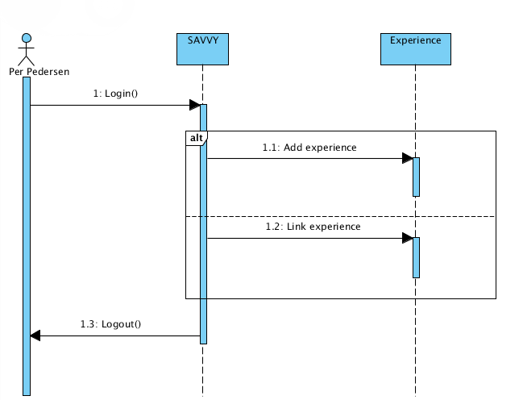
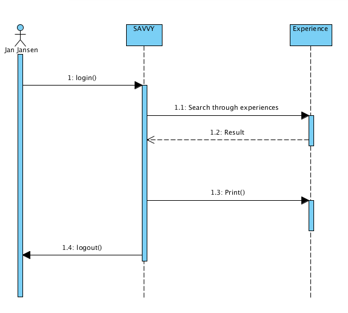

2.1
-
-
Scenario 1 Ola G. logs into SAVVY. There, he invites the other developers to the database. He then updates his information, such as areas of competence and responsibilities, by setting himself as the project manager of the TJA project. He then registers the project, and inserts the requirements definition document, estimated costs and schedule into the database. Finally, he inserts references to the persons allocated to the project, and logs off.
Scenario 2 Per P. logs into SAVVY and adds experiences from his project UFFAMEI. Then he links this experience to the project, and logs off.
Scenario 3 Hans H. logs in, and finds Per's experience from the UFFAMEI project. He adds comments to these experiences from experiences he made in a previous job, and links these comments to the experience from that previous job. He also uploads an example risk table from that same previous job.
Scenario 4 Jan J. logs in, and searches for experiences of the "Process" type. He finds Per's experience and prints them out, before he logs off.
Scenario 5 Ole O. logs in, and searches for experiences with the criteria "Type = Code" and "Keywords = {Java, Calculus, Gamma}". He downloads the desired code and logs out.
Scenario 6 Ole O. logs back in, and finds the code he used. He then adds his experiences, and uploads his new, modified code. Then he marks the changes he made to the code, before he once again logs out.
- 
